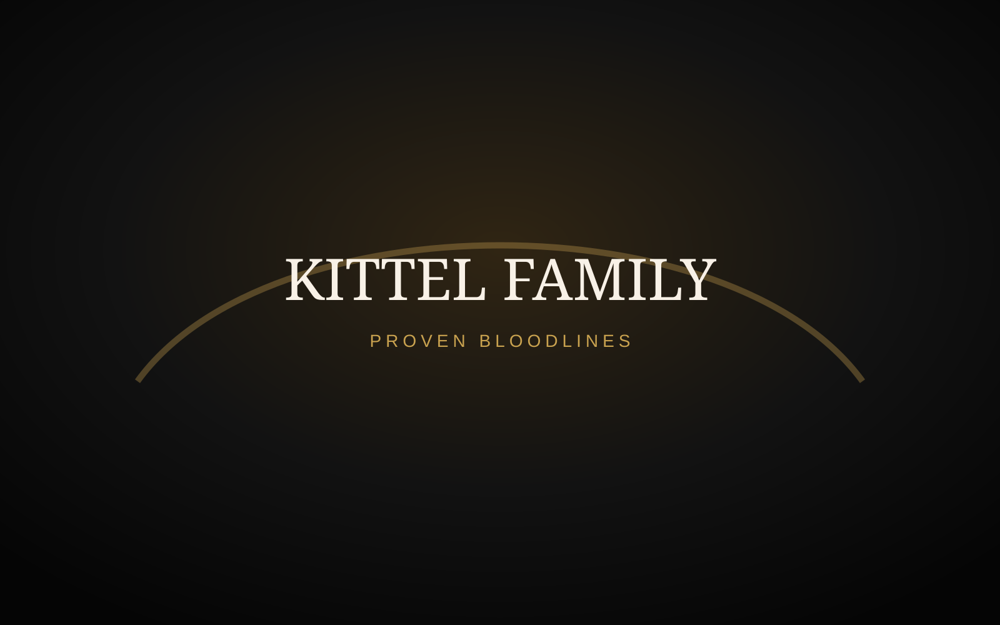

Basis
Bekijk duiven
Kittel / Van den Bulck
De absolute basis van de moderne snelheid. Best Kittel, Méchant Best Kittel, Angelina, Olympic Rosita en Goede Rode vormen een uitzonderlijke genetische basis.
Best Kittel
Méchant Best Kittel
Olympic Rosita
Angelina
Bekijk duiven